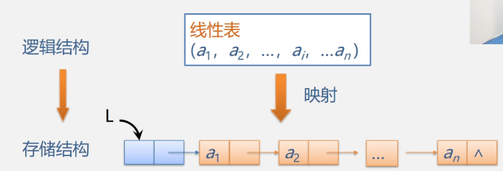

2/8 线性表（中）
2.5 线性表的链式表示和实现
2.5.1 基本概念
线性表的链式表示又称为非顺序映像或链式映像，逻辑次序和物理次序可能并不一致。
下图为带头结点的单链表示意图：

- 结点只有一个指针域的链表，称为单链表或线性链表
结点有两个指针域的链表，称为双链表
首尾相接的链表称为循环链表（可分单循环和双循环）

- 头指针:是指向链表中第一个结点的指针
首元结点:是指链表中存储第一个数据元素a,的结点
头结点:是在链表的首元结点之前附设的一个结点;

- 头结点的好处：便于首元结点的处理，空表和非空表可以统一处理（头指针都是指向头结点的非空指针）
- 链表（链式存储结构)的特点：
(1）结点在存储器中的位置是任意的，即逻辑上相邻的数据元素在物理上不一定相邻。
(2）访问时只能通过头指针进入链表，并通过每个结点的指针域依次向后顺序扫描其余结点，所以寻找第一个结点和最后一个结点所花费的时间不等（顺序存取）
2.5.2 下面建立单链表：

建立链表时，通常采用LinkList L而不是Lnode L

更常用的定义方式
基本操作：
- 单链表的初始化：

- 判断链表是否为空（空表无元素，但是头指针和头结点仍然在）

- 单链表的销毁：


- 清空链表就是从清空元素保留头结点和头指针。从首元结点开始删除

- 求表长，用一个新指针等于头结点的指针域，非空就计数，然后转而下一个元素的指针域，不断循环知道为空。
- 取值：取第i个元素，必须从头开始一个个往后找，因此链表为顺序存取而非随机存取
- i大于链表长度，则在空指针处停止。
- i<1,则一开始就停止。可以在循环结束的位置判断计数器是否大于i
- 查找：返回地址或编号，考虑查找不到的情况，用空指针判断
- 插入：在第i处插入数据为e的新结点，考虑插入位置非法

- 删除第i个结点：考虑删除位置不合理

算法时间 效率分析

建立单链表：
- 头插法，时间复杂度O(n)


- 尾插法，正位序，时间复杂度O(n)

评论